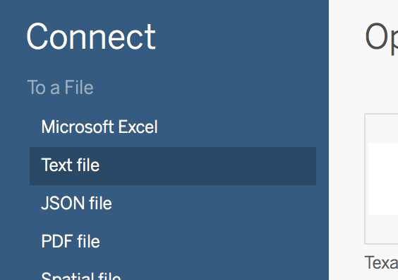
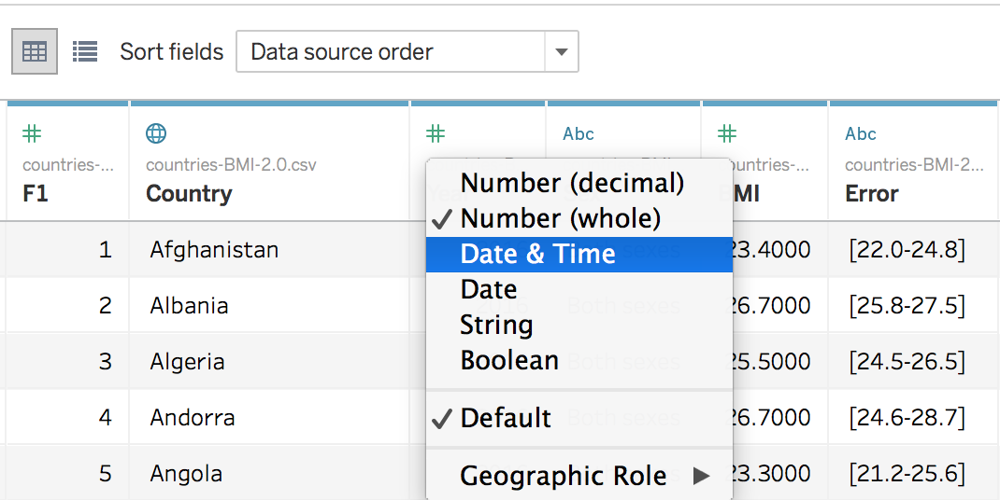
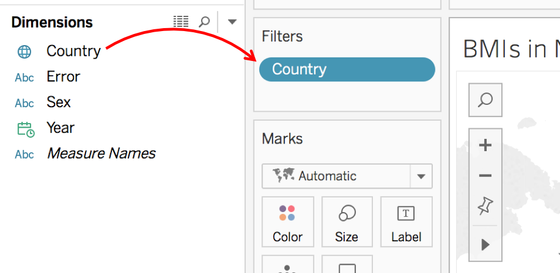
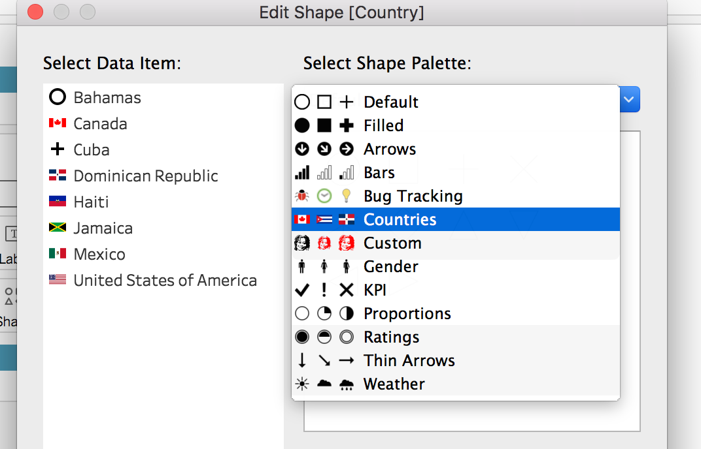
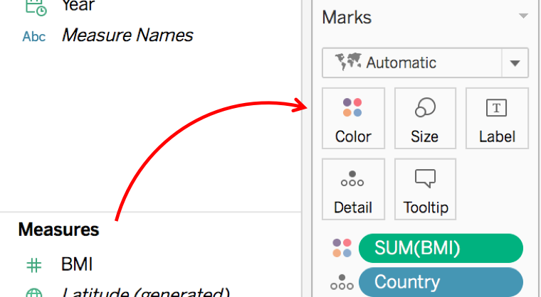
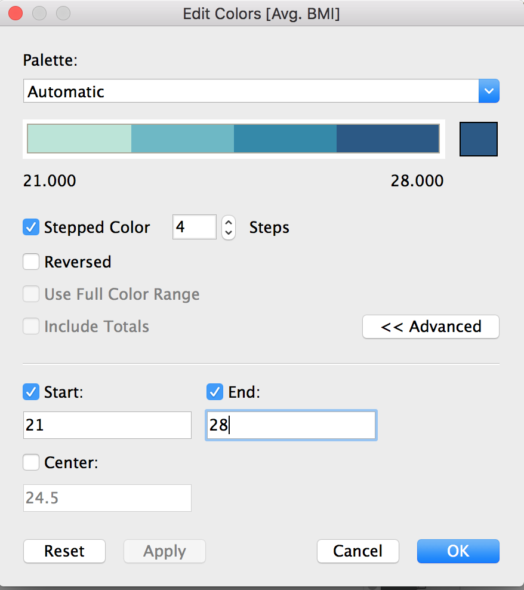
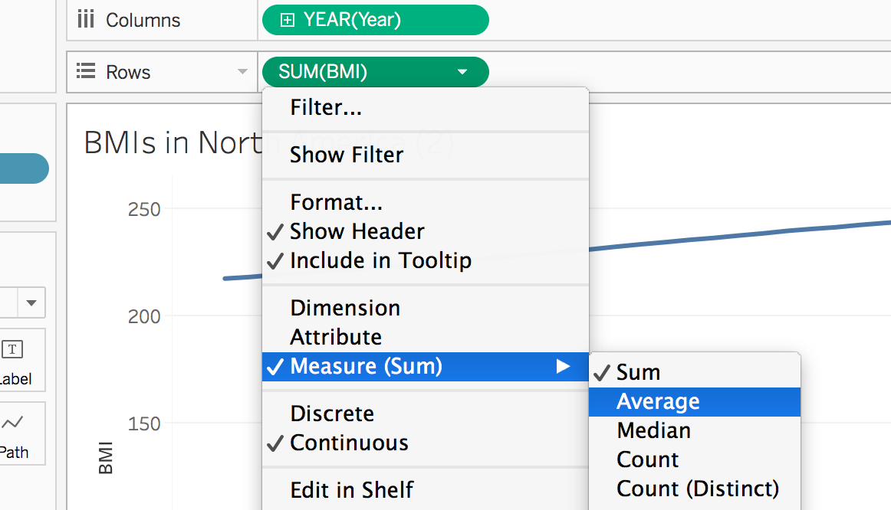
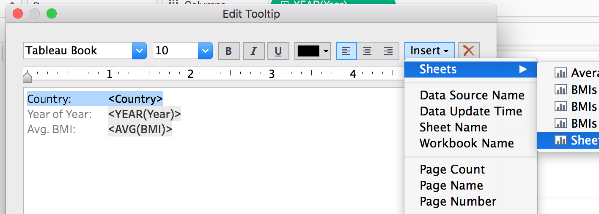
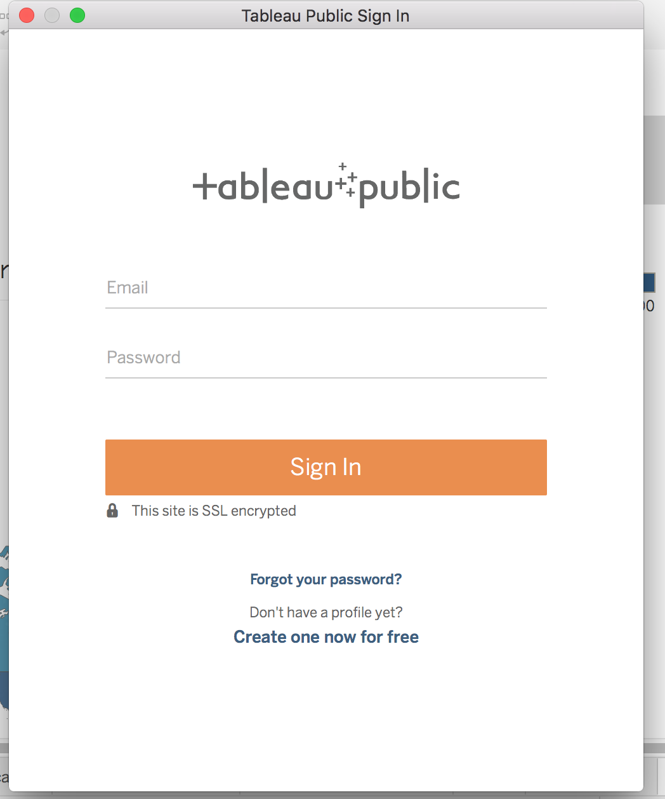

Learning Objectives
Upon completion, participants will be able to
- Utilize the chart type that matches the variable(s).
- Declutter visualizations and emphasize their message.
- Create narratives with data visualizations.
- Create interactive dashboards with Tableau Public.
Feel free to follow along with the presentation in these slides:
Before opening Tableau,
countries-BMI-2.0.csv dataset from Google Drive. Be sure to remember where you saved it on your computer!Countries folder. Then unzip that folder and move it into your computer by going to Documents -> My Tableau Repository -> Shapes. After you've done that, go ahead and open Tableau Public.Next, we will build dashboards in Tableau.
First, we are going to create the charts that will go on the dashboard. Each chart has its own sheet.
So, connect to the countries-BMI-2.0.csv dataset, by clicking on Text File on the left menu.

Then we will make a few changes to the data, including removing the underscore from the Country header by double-clicking, changing the Year data type to Date & Time by clicking the pound sign or hash above the header.

If you'd like, you can also hide the first column using the arrow pointing down next to the header.
To create a chart, click on Sheet 1 in a tab at the bottom of the application. To add elements to the chart, you drag the variable (called a pill) from the left menu to the center space or to the Rows or Columns area near the top.
Notice the variables are divided into Dimensions and Measures on the left, based on whether they are continuous/discrete data or other data types.
We are going to create a chart just to use the icons later. Start with Sheet 1. First, we will limit to those countries that are in North America and the Greater Antilles by dragging the Country pill to the Filters area and select Canada, Cuba, Dominican Republic, Haiti, Jamaica, Mexico, and the United States of America by pressing None and then checking the appropriate boxes.

NOTE: Because Cayman Islands and Puerto Rico are not countries in themselves, they don't have their own numbers in the dataset.
Now drag the Country pill over to the line next to Rows. It will list the Countries we selected during filtering. Under Marks, change the drop-down selection from Automatic to Shapes.
Now, we will assign flags to each country. On the right, there is a key showing the shape for each country. Select the arrow pointing down next to Country then select Edit Shapes.
In the new window, change the drop-down to Countries.

This is the file you saved to your computer earlier. If you want to add custom icons in Tableau, you must save them in the Shapes folder in My Tableau Repository. Go ahead and assign each country their flag by clicking on the country and then the associated flag. Then press Okay.
The last change we will make will be to increase the size of the flags. Do this by clicking on Size in the Marks area and then slide to almost the very end. Don't worry about the shapes overlapping because they will be displayed separately elsewhere.
Let's plot a map showing how high or low each country's BMIs are.
Drag the Country pill onto the open area in the middle, and a map should appear with a dot on each country with data. Next, drag the BMI pill to Color in the Marks area. Change the Measure for BMI from Sum to Average.

This will color the map according to BMI. Let's edit the colors by clicking the arrow pointing down next to the AVG(BMI) color scale on the right. Adjust the settings to be Stepped Color with 4 steps. Then press the << Advanced button to then change the Start and End to 21 and 28. Then press Apply to see your changes. See the settings in the image below:

Next, add a filter by dragging the Sex pill onto the Filters area, selecting All, and pressing okay. Then click the arrow pointing down on that pill and choose "Show Filter." The filter will then be shown on the left. Click the arrow pointing down next to Sex on that filter and change it from a Multiple Values (list) to a Single Value (list).
Now, we are going to give the chart a title by double-clicking on the text "Sheet 2" in the tab at the bottom and typing in the following: Average BMI by Country.Duplicate that first sheet two times by right-clicking the sheet and pressing Duplicate. Title these new sheets Average BMIs of North America and Average BMIs of the Greater Antilles respectively.
For the North America chart, we will limit to those countries by dragging the Country pill to the Filters area and select Canada, Mexico, and the United States of America by pressing None and then checking the appropriate boxes.
Repeat these steps for the Greater Antilles chart, but instead select Cuba, Dominican Republic, Haiti, and Jamaica.
Next, we are going to create line charts for both regions (North America and Greater Antilles).
I recommend making one first, then duplicating it and changing the filtered countries. Let's start with the United States. Click the icon of a bar chart with a plus sign in front of it at the bottom of the application. That will create a new sheet.
Filter by country, selecting Canada, Mexico, and the United States of America. Next, drag the Year pill up to the Columns area. Drag the BMI pill up to the Rows area. Change BMI measure from Sum to Average.

Lastly, you will drag the Country pill onto the line chart, and that will create a line for each country.
Let's add our flags to the tooltip (information that is revealed when you hover over the chart.)
To do this click on the Tooltip button in the Marks area.
Then we will highlight the text that says Country: <Country>. Click on Insert->Sheets->Sheet 1.

Selecting to add that sheet will add the following text to your tooltip editor: <Sheet name="Sheet 1" maxwidth="300" maxheight="300" filter="<All Fields>">. Press Okay.
Now, when you highlight over information about a country, the flag will appear.
Duplicate this chart and then change the countries in the filter to Cuba, Dominican, Republic, Haiti, and Jamaica.
Let's create a table with the countries with the highest BMIs and a table with the countries with the lowest BMIs.
Click the icon to add a sheet at the bottom right of the tabs. Then drag Country to Rows. Next, drag BMI into the section with the repeating ABCs in the table. Then press the Sort icon in the top menu. Count the first ten countries and select the eleventh all the way to the bottom. Right-click your selection and then press Exclude. Now you have the top 10 most heavy countries. Rename your sheet to describe your table.
Duplicate the sheet to create another table. This time, you will remove the Country pill from the Filters area to show all of the countries again. Now, press Sort again to sort it in the opposite direction. Once again, count the first ten countries and select the eleventh all the way to the bottom. Right-click your selection and then press Exclude. Now you have the top 10 least heaviest countries. Rename your sheet to describe your table.
To create a new dashboard, select the icon in the bottom right of the tabs that shows four squares with a plus sign.
On the left, you will see the charts you made. You can highlight your mouse over it to see a preview of the chart. Then drag the chart you would like to add onto the dashboard (big open white space).
The first chart will fill the whitespace. Then, as you add charts, they will divide up the area. Your filters and keys will come along with the chart.
Create two dashboards, one with the global BMIs and the tables and one with the two charts for North America and the two charts for the Greater Antilles.
To create a story, we select the icon that looks like an open book with a plus sign. Like the dashboards, your elements will appear on the left. To add elements onto the working area in the middle, double-click them. This time, you will add your two dashboards. Add a caption to the box at the top.
To share your data discoveries with the world, you can save your workbook to Tableau Public, a free cloud service. On Tableau Public, anyone can interact with your views, or download your workbooks or data sources. For information, go to the Tableau Public website.
With your story open in Tableau Public, select File > Save to Tableau Public.
Sign in using your Tableau Public account.

If you don’t have an account, select the link to create a new one.
Type a name for the story and click Save.
When you save a workbook to Tableau Public, the publishing process creates an extract of the data connection.
Tip: The title becomes part of your view’s metadata. Use a unique title that will help others find it when they search.
After the workbook is published, you are redirected to your account on the Tableau Public website.
On your profile page on Tableau Public, do any of the following to customize your profile:
Hover the pointer over a viz to get access to actions such as selecting it as your featured viz, or hiding, downloading, or deleting it.
Hover the pointer over a viz and then select View to open the viz’s home page. There you can select Edit Details to customize metadata such as workbook name and description, add a permalink, and change other settings.
To get a link to share on social media or code to embed in a web page, display a view, and then click Share at the bottom of the view. (You can get links and embed code for other Tableau Public users’ views this way, too.)
The Data 'Shop,
2017. License. Contributing.
Questions? Feedback?
Please file
an issue on GitHub.
On
Twitter: @123POW